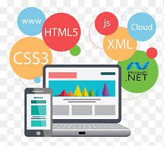
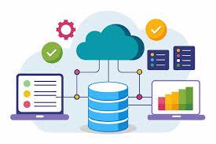
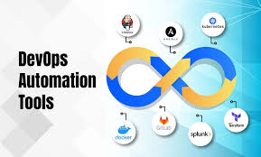
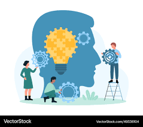

Programming Languages
Java – Popular for enterprise, Android, and web applications.

Becoming a Software Developer requires a mix of technical programming skills, software engineering principles, and soft skills that help you design, build, and maintain modern software systems effectively. Below is a structured breakdown of the languages, technical skills, and professional abilities you should focus on:
Java – Popular for enterprise, Android, and web applications.

Object-Oriented Programming (OOP) – Reusability, encapsulation, and abstraction.
Data Structures & Algorithms – For problem-solving and performance optimization.
Software Development Life Cycle (SDLC) – Agile, Scrum, and DevOps practices.
Version Control Systems – Git and GitHub for collaboration and project tracking.
Debugging and Testing – Unit testing (JUnit, PyTest), integration testing.
API Development – RESTful and GraphQL APIs.

Frontend: HTML, CSS, JavaScript, React, Angular, or Vue.js.
Backend: JAVA, Spring Boot,Microservices,REST API or ASP.NET.
Mobile Apps: Flutter (Dart), React Native, or Swift (iOS), Kotlin (Android).

Databases: MySQL, PostgreSQL, MongoDB, or Firebase.
Cloud Platforms: AWS, Microsoft Azure, or Google Cloud Platform (GCP).
Containerization & CI/CD: Docker, Kubernetes, Jenkins, GitHub Actions.

Operating Systems: Linux, Windows, and command-line usage.
APIs & Microservices Architecture.
Basic Cybersecurity & Data Privacy.
DevOps and Automation Tools.
Problem-solving & analytical thinking.
Teamwork & collaboration (Git, Agile sprints).
Communication skills for explaining technical ideas clearly.
Adaptability — staying up to date with new technologies and frameworks.

Problem-solving & critical thinking
Continuous learning mindset
Collaboration and communication
Introduction: End-to-Implemented data parsing, validation, cleaning, and transformation using Java Collections, Streams, and custom utility classes..
Objective: Build a practical text analytics pipeline and present results with interpretable charts.
Process (high level):
Tools: JAVA, Spring Framework, Web Server, CI-CD pipe line, GIT, GitHub Pages.
Introduction: This artifact demonstrates my earImplemented data parsing, validation, cleaning, and transformation using Java Collections, Streams, and custom utility classes..
Objective: Throughout this artifact, I learned how critical it is to properly clean data, select meaningful features, and evaluate models using metrics such as accuracy, precision, recall, and confusion matrices. Before completing this project, I tended to focus heavily on model training, but this experience taught me that the quality of preprocessing and evaluation is what truly determines model value. I realized that even a simple model like Logistic Regression or a Decision Tree can produce strong results when built on clean, structured, well-explored data.
Tools & Tech: Python, Pandas, Scikit-learn, Matplotlib, Plotly, NLTK, Jupyter Notebook.
Relevance: Demonstrates AI-driven data insight generation, ideal for analytics and business intelligence domains.
Artifact 4 Reflection: For my fourth portfolio artifact, I selected a recent assignment that highlights a different dimension of my AI and machine learning skills, particularly my ability to critically evaluate technical work and adapt complex concepts for diverse audiences. I revised this artifact to improve clarity, reorganize the content, and expand explanations so that viewers—whether instructors, industry professionals, or potential employers—can easily understand the AI/ML techniques involved and the reasoning behind my analysis. This refined version showcases not only my technical knowledge but also my strengths in communication, presentation, and reflective thinking, ensuring that my portfolio presents a well-rounded representation of my progress in the course and my readiness to apply AI/ML concepts in real-world environments.